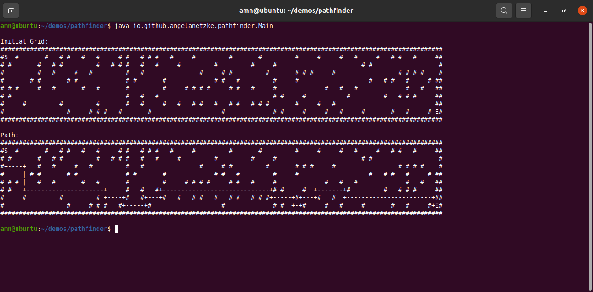

Advent of Code is a annual set of coding challenges with a two-part challenge releasing each day from December 1 through December 25th. I participated the 2021 event, using C# as my programming language and Visual Studio as my IDE.
In this project, I sharpened my C# skills by recreating the game Asteroids using the Unity game engine. One of the challenges of this project was handling the movement of the ship which continues to glide even when no buttons are being pushed, unlike the movement in most video games. The process of recreating a game required me to understand the requirements of the project by experience, rather than have them stated and to create code that satisfied those requirements.
This project is a web project that uses Java on the back end and the d3.js javascript library on the front end. Pulling data from the Covid ActNow website, I generated a color-coded map that indicates the current infection rate of each state. I implemented a cache system so that if an API call was made in the last six hours, the back end will return the cached version of the data rather than make another API call.
For this project, I implemented the A* algorithm to navigate a field of obstacles. For each node in the field, I calculated the Manhattan distance to the endpoint in order to determine which node to place at the top of the priority queue. The weight of each segment in the path is equal and the program avoids bias in the direction of travel by randomly choosing among nodes the could equally be placed at the top of the queue.
Steganography is hiding a message in a way that it is not obvious that a message has been encoded. I find the subject to be very interesting so I decided to create a program using the concept of least significant bit encoding to encode an image inside another image. For this project, I learned about how different methods of steganography work and then created a program that implemented one of the algorithms I learned about.
Sudoku puzzles are a popular puzzle where the solver places numbers in squares so each row, column, and region (a 3 x 3 grid) only contains one of each digit. I created a Sudoku solver using Visual C# in Microsoft Visual Studio. In this project, I expanded on what I have learned in my data structures classes by developing my own data structure to handle the values for each square of a Sudoku puzzle. Solving the puzzle requires a data structure where each square is contained in its own combination of row, column and region. The challenge of this project was translating the process of solving a Sudoku puzzle into code that a computer can understand.
I have released two games on itch.io. One of them is an arcade style game called "Bomb Run" and the other ("Lab Escape") is an escape game. I created both of them using C# with Unity.
As part of a software engineering class, I worked in a group of 5 people to develop a website to help the California Department of Rehabilitation evaluate the impact of improving accessibility of the department's systems. The project was done in C#.
As part of my senior project, I worked in a group of 8 people to develop a mobile app that will keep a user informed about computer security issues with a knowledge base and communication forum. The project was done in React Native.